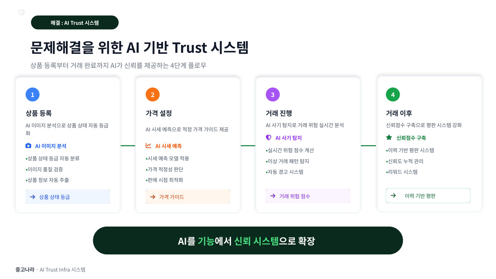

중고나라는 2003년 네이버 카페로 시작한 국내 최대 개인거래 플랫폼이다. 누적 회원이 2,000만 명이 넘고 하루에 4만 건 이상의 물건이 올라오며, 개인끼리 물건을 사고파는 시장 자체도 4조 원에서 45조 원으로 10배나 커졌다. 그런데 중고거래에는 근본적인 약점이 있다. 사진만 보고는 물건 상태를 알기 어렵고, 처음 보는 상대를 믿기 어렵고, 적정 가격을 몰라 흥정이 부담스럽고, 사기를 당할 위험까지 있다. 이런 불안 때문에 거래를 포기하는 사람이 많았고, 회사도 창사 이후 23년 동안 계속 적자였다.
답은 개인이 알아서 상대를 의심하게 두지 말고 플랫폼이 신뢰를 시스템으로 보장하자는 것이었다. 스마트폰처럼 검사 항목이 정해진 제품은 사진 3장만 올리면 AI가 흠집과 액정 이상을 찾아주는 셀프 검수를 만들었더니 거래 성사율이 2배가 되었고, 문제가 생기면 최대 100만 원까지 물어주는 안심결제를 모든 거래에 의무화했다. 나아가 ①상품 등록 때 AI가 상태 등급을 매기고 ②시세를 예측해 적정 가격을 제시하고 ③거래 중 사기 패턴을 실시간으로 탐지하고 ④거래 후 신뢰 점수를 쌓는 4단계 AI 신뢰 시스템(Trust Infra)을 설계했다. 여기서 발표의 핵심 명제가 나온다. 이 시스템은 결국 조직이 만드는 것이고, 조직이 그 능력을 갖추려면 리더가 먼저 AI를 몸에 익혀야 한다는 것이다. 그래서 최인욱 대표는 복사 단축키를 두 번 누르면 메시지를 다듬어 주는 앱(월 72원), 회의를 자동으로 기록해 사내 문서로 남기는 앱(월 1,300원), 슬랙 대화를 매일 요약해 주는 앱(월 600원)을 직접 만들어 매일 썼다. 그 경험을 바탕으로 직원 70명 중 27명이 자원한 전사 AI 챌린지를 7개 조로 운영하고, 개발자 전원에게 Claude Code Max를 지급했다.
이런 신뢰 기술을 쌓은 결과 회사는 26년 1분기에 창사 23년 만의 첫 분기 흑자를 기록했다. 매출은 26.8억 원에서 37.9억 원으로 늘고 영업이익은 -7.1억 원에서 +1.6억 원으로, 전년 같은 기간보다 약 9억 원이 개선됐다. 회사의 미션도 "누구나 자기 자산으로 돈을 만들 수 있게 한다. 내 서랍을 내 지갑으로"로 새로 선언하고, 2028년까지 중고거래 사이트를 넘어 개인의 자산을 돈으로 바꿔 주는 플랫폼이 되겠다는 3개년 계획을 세웠다. 정부 지원 사업에 뽑혀 연간 약 7억 원 규모의 AI 컴퓨팅 자원도 확보했다. 발표자는 AI 전환은 선포하는 것이 아니라 리더가 먼저 체화하고 조직이 따라오도록 설계하는 것이라는 말로 발표를 마쳤다.